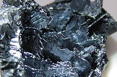

Numero atomico: 53
Massa atomica: 126,9
Temperatura di fusione (°C): 114
Temperatura di ebollizione (°C): 184
Energia di prima ionizzazione (kj/mol): 1008
Elettronegatività (secondo Pauling): 2,66
Densità: 4,93
Numeri di ossidazione: ±1+5+7
Configurazione elettronica: 1s2, 2s2, 2p6, 3s2, 3p6, 3d10, 4s2, 4p6, 4d10, 5s2 5p5
Maggiori Informazioni